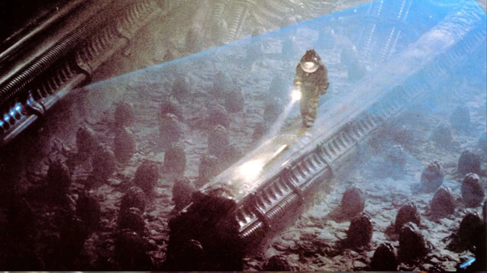
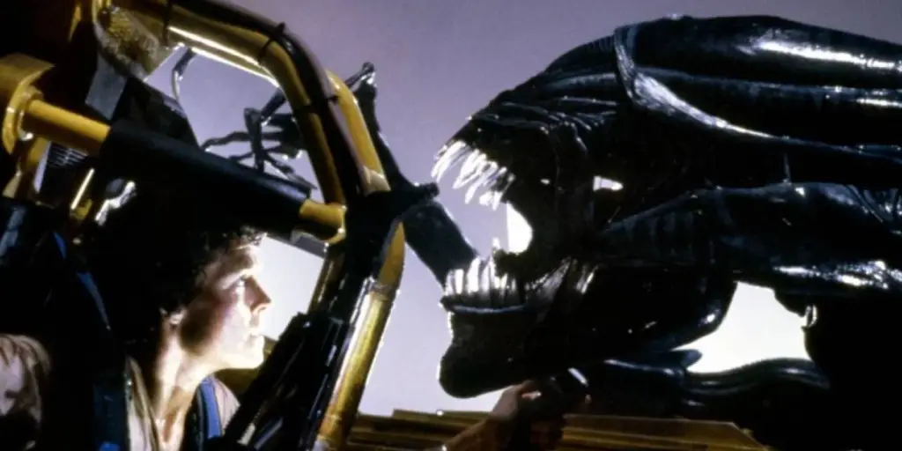
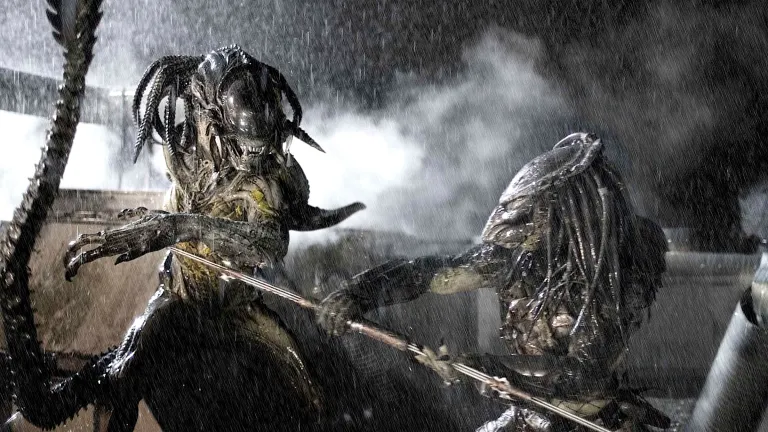

A biologia do Alien Xenomorfo

Com seu exoesqueleto biomecânico, sangue ácido e um ciclo de vida aterrorizante, o Alien Xenomorfo é uma das criaturas mais icônicas e temidas da ficção científica. Mas por trás do design assustador de H. R. Giger existe uma biologia ficcional tão complexa e bem pensada que nos faz questionar: e se esse pesadelo fosse real?
O que torna o Xenomorfo um predador tão perfeito? A resposta está em sua biologia adaptativa, que se inspira em alguns dos mecanismos mais brutais da natureza. Do parasitismo extremo à estrutura social de colmeia, a criatura é um espelho sombrio e exagerado da própria evolução, nos forçando a encarar os limites da sobrevivência.
Neste texto, vamos dissecar a biologia do Alien Xenomorfo. Analisaremos seu ciclo de vida aterrorizante, suas características de adaptação genética e como a ciência do mundo real inspirou a criação desse monstro inesquecível.
O que é um xenomorfo?
O xenomorfo, também conhecido como Alien, é uma criatura extraterrestre criada originalmente para o filme Alien – O Oitavo Passageiro (1979). Seu nome vem do grego e significa algo como “forma estranha” o que combina perfeitamente com sua aparência e comportamento.
Mas o que realmente fascina na criatura é seu ciclo de vida e como ele é quase uma homenagem (meio bizarra) à natureza. Vamos entender isso melhor?
O Ciclo de Vida Parasitário do Xenomorfo

A biologia do Alien Xenomorfo é mais assustadora em seu ciclo de vida, que imita o de parasitas reais de forma aterrorizante, como a vespa parasita ou o ciclope. Ele é composto por quatro estágios principais:
- Ovo: Um casulo orgânico que se abre apenas quando detecta a presença de uma vítima por perto.
- Facehugger: Um organismo aracnídeo que salta do ovo e se agarra ao rosto da vítima, inserindo um embrião.
- Chestburster: O embrião cresce dentro do peito do hospedeiro e eventualmente o arrebenta por dentro (sim, é tão horrível quanto parece).
- Xenomorfo adulto: Depois da saída dramática, a criatura cresce rápido e vira um predador altamente eficiente.
Parece saído de um pesadelo, né? Pois é, mas se você olhar com atenção, esse processo lembra o de vários organismos reais. A vespa esmeralda , por exemplo, controla a mente de uma barata e deposita larvas no corpo dela. Bizarro, porém natural!
Adaptação extrema: o que torna o xenomorfo tão perigoso?
O xenomorfo é uma máquina de matar quase perfeita e não é exagero. Ele foi feito com características que maximizam suas chances de sobrevivência e domínio do ambiente. Vamos explorar algumas delas:
1. Adaptação ao DNA do hospedeiro
Uma das coisas mais interessantes é que o xenomorfo herda características genéticas do hospedeiro. Se o embrião for incubado em um humano, o resultado será diferente do que se ele incubar, por exemplo, em um cachorro (como vemos em Alien 3).
Na prática, isso dá para o Alien uma vantagem evolutiva absurda, pois ele se adapta ao ambiente de maneira quase imediata. Imagina só se a gente tivesse essa capacidade? Cada um de nós poderia se adaptar ao clima de outra cidade em minutos!
2. Crescimento acelerado
Logo após sair do peito do hospedeiro, o chestburster cresce de forma impressionante. Em poucas horas, se transforma em uma criatura forte, rápida e altamente agressiva.
Os cientistas ficariam intrigados com esse metabolismo. Como ele consegue isso? Talvez com uma combinação de DNA altamente eficiente e um sistema de absorção de nutrientes hiperativo.
3. Sangue ácido
Já pensou em tentar matar um xenomorfo e acabar corroendo o próprio chão da nave? Pois é, o sangue da criatura é altamente ácido. Isso não só impede que predadores ataquem como também serve como uma forma de “vingança pós-morte”.
Na biologia real, algumas formigas e besouros têm mecanismos parecidos, usando ácidos ou substâncias químicas para se proteger, mas nada tão potente quanto o que a ficção imaginou para o Alien.
A Inteligência do Xenomorfo: Predador ou Ser Senciente?

Apesar da aparência bestial, o xenomorfo é inteligente e estratégico. Ele aprende, se adapta e, muitas vezes, age em grupo, como vimos em Aliens – O Resgate. Ele não age só por instinto: sabe atacar de forma furtiva, desligar sistemas e até armar emboscadas. Assustador? Com certeza.
Isso faz muita gente pensar: será que ele é apenas um predador, ou algo mais? Em alguns filmes, a criatura parece agir como parte de uma colmeia, semelhante às abelhas, com uma rainha xenomorfa controlando os demais. Essa estrutura social remete muito ao mundo dos insetos.
+ Leia mais: Como seria uma vacina contra o Cordyceps?
A Inspiração na Natureza: A Biologia Real por Trás do Horror
Acredite ou não, muitos dos elementos da biologia do Alien Xenomorfo foram inspirados em criaturas e processos que existem na natureza. Quem já ouviu falar da larva de certa mosca (conhecido também como berne ou bicheira) que invade o cérebro do seu hospedeiro até matá-lo vai concordar: a natureza às vezes é mais cruel que a ficção.
Os criadores do Alien sabiam disso. Eles usaram elementos de:
- Insetos parasitas
- Répteis como cobras e lagartos
- Mecanismos evolutivos reais
- Comportamento de colmeias
O resultado? Um monstro que parece até plausível, dentro das regras malucas do universo sci-fi.
No fim das contas, o ponto forte do xenomorfo é que ele nos faz refletir sobre os limites da biologia e até onde a evolução pode chegar. E mais: ele é um espelho sombrio dos nossos próprios medos medo do desconhecido, da contaminação, da perda de controle.
O Alien é como uma febre sci-fi: uma vez dentro da mente, difícil esquecer. Afinal, ao unir elementos científicos com puro terror, a criatura ganhou um lugar eterno no imaginário nerd e cinéfilo.
Curiosidade bônus: o xenomorfo já esteve em HQs, games e até enfrentou o Predador

Quem é fã de comics ou videogames provavelmente já viu o Alien fora dos cinemas. Ele já apareceu em:
- Quadrinhos como Alien vs Predator
- Jogos como Alien: Isolation e Aliens: Fireteam Elite
- Crossovers loucos com o universo do Predador
Isso mostra o quanto a criatura se tornou um ícone cultural. Mesmo décadas depois, continua relevante e assustadora.
O Legado da Biologia Ficcional do Alien
O xenomorfo é uma aula ambulante de biologia imaginária. Mais do que um monstro de filme, ele representa o encontro assustador entre ciência, ficção e terror com pitadas generosas de criatividade.
Se você curte teorias científicas malucas, filmes de arrepiar e criaturas bizarras, o universo Alien é um prato cheio. E o melhor: sempre dá pra descobrir algo novo sobre sua complexa (e mortal) biologia.
E você, já pensou como seria o Alien incubado em uma espécie brasileira? Imagina um xenomorfo com o DNA de uma onça-pintada? Melhor parar de pensar nisso, né?
Para saber mais
- Wikipedia: Xenomorph
- Alien: Isolation – jogo que explora a tensão e inteligência do Alien
Gostou do conteúdo? Compartilhe com outros nerds curiosos e deixe seu comentário sobre qual criatura você gostaria de ver analisada aqui no blog do Nerdático!
Leia Também
- Viagens no tempo fazem sentido em algum filme?
- O paradoxo do tempo em De Volta para o Futuro
- Qual o impacto ambiental de Mordor?
- 7 tecnologias do Star Trek que viraram realidade
- Stranger Things e a física do Mundo Invertido
Sharing is caring!